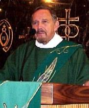

"Audrey's dynamic personality and method engaged our college students, got them interested in examining their own effectiveness and how to work at improving their proclamation."

"I experienced this type of technique a number of years ago when the archdiocese had a similar program. We are seeing results with our people, because when they see themselves on camera, they become their own best critic. They saw their weak points, and worked on them. Another important point is that you could see they really enjoyed the class."
"The practice sessions before the video taping were very beneficial to me. I got a better understanding of how we lectors can color and emphasize certain words to give meaning to the readings."
"I can see a marked difference in our lectors' delivery. Their proclamation is more effective and better understood by our parishioners. Audrey got them fired up."
"I learned the importance of pauses and proper breathing. In the video playbacks, I saw that I needed more eye contact with parishioners."